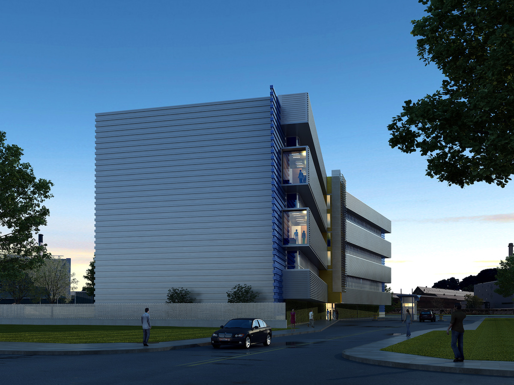
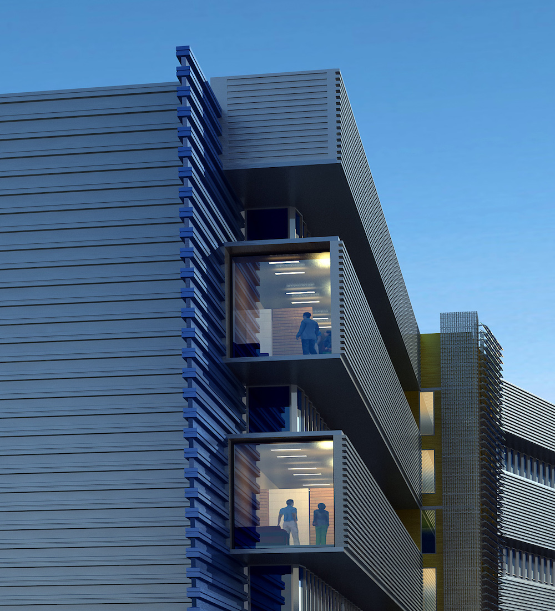

In order to maximize the three stories and a 75,000 sq ft irregulary-shaped site, SBLM used a linear building to play a significant role in the urban context. The composition features white-roof technology, which supplies similar benefits of a green roof without the associated costs required to structurally support it.
Project Details
75,000 Square Feet
Brooklyn, New York
Civic

This urban industrial park is at the heart of the client's brief and keeps within the sustainable initiatives and goals outlined for the project as it creates a pedestrian friendly foyer to structurally support it.
The site stands on a 300-acre parcel of land on the scenic Brooklyn waterfront. Designed to achieve LEED-Silver at minimum, the design proposes several green features that speak to the client's desire for a forward-thinking design on a minimal budget.